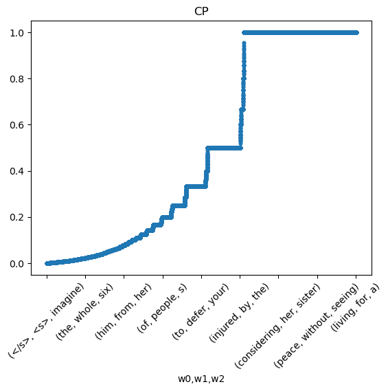
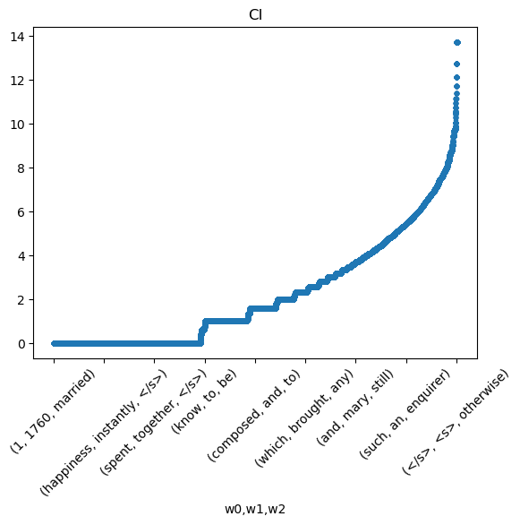
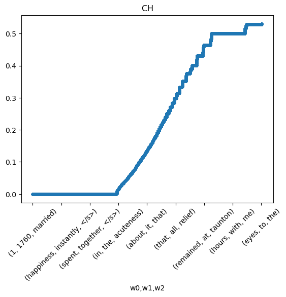

import pandas as pdEntropy and Peplexity
Course: DS 5001
Module: 03 Lab
Topic: Entropy and Peplexity
Author: R.C. Alvarado
Purpose: Clarify concept of perplexity.Entropy
Entropy \(H\) is the expectation of information in a distribution.
Self-entropy \(h\) is the information of an event.
Information \(i\) is log normalized surprise of an event.
Surprise \(s\) is just the inverse probability on an event.
Probability \(p\)
\(\Large p = \frac{n}{N}\)
\(p(w) = \Large\frac{n_w}{N_{corpus}}\)
p = n / n.sum()
Most terms have low probability.
Surprise \(s\)
\(\Large s = \Large\frac{1}{p}\)
\(s(w) = p(w)^{-1}\)
Surrprise \(s\) increases as the inverse of \(p\). Note how inverting \(p\) adds variance to the long tail; the curve now looks like a simple quadratic. We can see a more gradual increase in surprise as terms become more rare.
Information \(i\)
\(\Large i= log_2(s)\)
\(i(w) = log_2(s(w))\)
As normalized suprise, information now has a long tail structure. But notice also the range of information – it is between 1 and 18. What does this correspond to?
Entropy \(h\)
\(\Large h = p i\)
\(h(w) = p(w)i(w)\)
For the self-entropy of each term, we multiply \(p\) and \(i\). When summed, this will give us the expectation of the information in the distribution, i.e. it’s entropy.
Perplexity \(PP\)
\(\Large PP = \Large 2^{i}\)
Chiasmus
The process of computing entropy follows a chiasmus pattern.
\(A_1 \rightarrow B_1 \rightarrow B_2 \rightarrow A_2\)
\(p \rightarrow s \rightarrow i \rightarrow h\)
\(A: \{p,h\}\)
\(B: \{s,i\}\)
Demonstration
Set up
import configparser
config = configparser.ConfigParser()
config.read("../env.ini")
# data_dir = config['DEFAULT']['data_home']
output_dir = config['DEFAULT']['output_dir']ohco = ['book_id','chap_num','para_num','sent_num','token_num']Import data
K = pd.read_csv(f"{output_dir}/austen-combo-TOKENS-v2.csv").set_index(ohco)
V = pd.read_csv(f"{output_dir}/austen-combo-VOCAB-v2.csv").set_index('term_str')K.head()| token_str | term_str | |||||
|---|---|---|---|---|---|---|
| book_id | chap_num | para_num | sent_num | token_num | ||
| 1 | 1 | 1 | 0 | 0 | The | the |
| 1 | family | family | ||||
| 2 | of | of | ||||
| 3 | Dashwood | dashwood | ||||
| 4 | had | had |
V.head()| n | n_chars | p | i | h | |
|---|---|---|---|---|---|
| term_str | |||||
| 1 | 3 | 1 | 0.000015 | 16.058901 | 0.000235 |
| 15 | 1 | 2 | 0.000005 | 17.643863 | 0.000086 |
| 16 | 1 | 2 | 0.000005 | 17.643863 | 0.000086 |
| 1760 | 1 | 4 | 0.000005 | 17.643863 | 0.000086 |
| 1784 | 1 | 4 | 0.000005 | 17.643863 | 0.000086 |
Assumes language models have been created.
LM = {}
for n in range(1, 4):
widx = [f"w{i}" for i in range(n)]
LM[n] = pd.read_csv(f"{output_dir}/austen-combo-LM{n}-v2.csv").set_index(widx)LM[1]| n | p | i | h | |
|---|---|---|---|---|
| w0 | ||||
| 1 | 3 | 0.000013 | 16.239120 | 0.000210 |
| 1760 | 1 | 0.000004 | 17.824082 | 0.000077 |
| 1784 | 1 | 0.000004 | 17.824082 | 0.000077 |
| 1785 | 1 | 0.000004 | 17.824082 | 0.000077 |
| 1787 | 1 | 0.000004 | 17.824082 | 0.000077 |
| ... | ... | ... | ... | ... |
| youth | 22 | 0.000095 | 13.364651 | 0.001267 |
| youthful | 3 | 0.000013 | 16.239120 | 0.000210 |
| zeal | 7 | 0.000030 | 15.016727 | 0.000453 |
| zealous | 4 | 0.000017 | 15.824082 | 0.000273 |
| zealously | 2 | 0.000009 | 16.824082 | 0.000145 |
8206 rows × 4 columns
Compute Perplexity
K['i'] = K.term_str.map(V.i)
K['h'] = K.term_str.map(V.h)2**((V.n * V.i).sum() / V.n.sum())568.04051142020482**(K.i.sum() / K.shape[0])568.04051142020342**K.i.mean()568.0405114202034K.i.mean()9.14985001306255# K# LM[1]for n in range(1, 4):
M = LM[n]
i_col = 'i'
if n > 1: i_col = 'ci'
N = int(M.n.sum())
print(i_col)
print(M[i_col])
i_sum = (M.n * M[i_col]).sum()
i_mean = i_sum / N
pp = 2**i_mean
print('model:', n, 'N:', N, 'i_sum:', i_sum, 'i_mean:', i_mean, 'pp:', pp)i
w0
1 16.239120
1760 17.824082
1784 17.824082
1785 17.824082
1787 17.824082
...
youth 13.364651
youthful 16.239120
zeal 15.016727
zealous 15.824082
zealously 16.824082
Name: i, Length: 8206, dtype: float64
model: 1 N: 232051 i_sum: 2022083.5712659408 i_mean: 8.713961893143924 pp: 419.91743882984446
ci
w0 w1
1 1760 1.584963
1785 1.584963
ends 1.584963
1760 married 0.000000
1784 elizabeth 0.000000
...
zealous attention 2.000000
officer 2.000000
on 2.000000
zealously active 1.000000
discharging 1.000000
Name: ci, Length: 78264, dtype: float64
model: 2 N: 287070 i_sum: 1225502.9711703723 i_mean: 4.269003975233819 pp: 19.279610163307574
ci
w0 w1 w2
1 1760 married 0.0
1785 </s> 0.0
ends </s> 0.0
1760 married july 0.0
1784 elizabeth daughter 0.0
...
zealous attention as 0.0
officer too 0.0
on the 0.0
zealously active as 0.0
discharging all 0.0
Name: ci, Length: 160376, dtype: float64
model: 3 N: 372472 i_sum: 574783.5789111388 i_mean: 1.5431591607184938 pp: 2.91431972306891M| n | p | i | h | cp | ci | ch | |||
|---|---|---|---|---|---|---|---|---|---|
| w0 | w1 | w2 | |||||||
| 1 | 1760 | married | 1.0 | 0.000003 | 18.506772 | 0.00005 | 1.0 | 0.0 | 0.0 |
| 1785 | </s> | 1.0 | 0.000003 | 18.506772 | 0.00005 | 1.0 | 0.0 | 0.0 | |
| ends | </s> | 1.0 | 0.000003 | 18.506772 | 0.00005 | 1.0 | 0.0 | 0.0 | |
| 1760 | married | july | 1.0 | 0.000003 | 18.506772 | 0.00005 | 1.0 | 0.0 | 0.0 |
| 1784 | elizabeth | daughter | 1.0 | 0.000003 | 18.506772 | 0.00005 | 1.0 | 0.0 | 0.0 |
| ... | ... | ... | ... | ... | ... | ... | ... | ... | ... |
| zealous | attention | as | 1.0 | 0.000003 | 18.506772 | 0.00005 | 1.0 | 0.0 | 0.0 |
| officer | too | 1.0 | 0.000003 | 18.506772 | 0.00005 | 1.0 | 0.0 | 0.0 | |
| on | the | 1.0 | 0.000003 | 18.506772 | 0.00005 | 1.0 | 0.0 | 0.0 | |
| zealously | active | as | 1.0 | 0.000003 | 18.506772 | 0.00005 | 1.0 | 0.0 | 0.0 |
| discharging | all | 1.0 | 0.000003 | 18.506772 | 0.00005 | 1.0 | 0.0 | 0.0 |
160376 rows × 7 columns
M.cp.sort_values().plot(style='.', rot=45, title='CP');
M.ci.sort_values().plot(style='.', rot=45, title='CI');
M.ch.sort_values().plot(style='.', rot=45, title='CH');
Notes
Cross Entropy and Perplexity
Probabilities of Sequences
$ W = W_1^N = (w_1, w_2 … w_N)$
True distribution: $ p = p(W) $
Model distribution: $ q = q(W) $
Cross Entropy
$ H(p, q) = - _{x}^{} p(x) log_2(q(x)) $
$ H(p, q) = _{x}^{} p(x) log_2() $
$ i_q(x) = log_2() $
$ H(p, q) = _{x} p(x) i_q(x) $
$ H(p, q) = $
Cross Entropy relative to MaxEnt
$ N = C(x) = _x c(x) $
$ p_{u} = $
$ H_{cross} = H(p_u, q) $
$ H_{cross} = _{x} i(x) $
$ H_{cross} = _{x} i(x) $
$ H_{cross} = $
$ H_{cross} = $
Perplexity
$ PP(W) = P(w_1, w_2 … w_N)^{-1/N} $
$ PP(p) = 2^{H(p)}$
$ PP(p_u, q) = 2^{H_{cross}}$
Redundancy
$ H_{max} = log_2(N) $
$ H_{max} = i(p_u) $
$ R = 1 - $
From J & M

From Stack Overflow
https://stats.stackexchange.com/questions/129352/how-to-find-the-perplexity-of-a-corpus 

NLTK
REDO: See https://stackoverflow.com/questions/54941966/how-can-i-calculate-perplexity-using-nltk
Perplexity is a measure of how well a probabilistic model is able to predict a sample. It is calculated as 2 to the power of the cross-entropy of the model and the sample. The lower the perplexity, the better the model is at predicting the sample.
Here is an example of how to calculate perplexity in Python using the Natural Language Toolkit (NLTK):
import nltk
from nltk.probability import FreqDist, MLEProbDist
# sample text
sample = "This is a sample text for computing perplexity."
# create a frequency distribution of the words in the sample
fdist = FreqDist(sample.split())
# create a maximum likelihood estimate (MLE) probability distribution
mle = MLEProbDist(fdist)
# calculate the perplexity of the sample using the MLE probability distribution
perplexity = 2 ** -(sum(mle.logprob(word) for word in sample.split())/len(sample.split()))
print(perplexity)8.0In this example, the sample text is passed to the FreqDist() function to create a frequency distribution of the words in the sample. This frequency distribution is then passed to the MLEProbDist() function to create a maximum likelihood estimate probability distribution. Finally, the logprob() function is used to calculate the log probability of each word in the sample, and these probabilities are summed and divided by the number of words in the sample to calculate the cross-entropy. The perplexity is then calculated by raising 2 to the power of the negative of the cross-entropy.
ChatGPT Jan 9 Version. Free Research Preview. Our goal
fdistFreqDist({'This': 1, 'is': 1, 'a': 1, 'sample': 1, 'text': 1, 'for': 1, 'computing': 1, 'perplexity.': 1})def get_pp(sent_str):
lang_mod = V.p
tokens = set(sent_str.split())
print(tokens)
# x = set(tokens).intersection(V.index.values)
x = list(tokens.intersection(V.index.values))
print(x)
mle = MLEProbDist(lang_mod.loc[x])
# print(mle)
# print(mle.freqdist())
# print(mle.generate())
print(mle._freqdist)
# sample = list(mle.samples())
# print(sample)
# print(mle.logprob(sample[0]))
# # pp = 2 ** -(sum(mle.logprob(token) for token in tokens)/len(tokens))
# pp = 2 ** -(sum(mle.logprob(token) for token in sample)/len(sample))
# return pp# Some paragraphs from Austen's _Emma_ and other stuff (first two)
S_TEST = """
The car was brand new
Computer programs are full of bugs
The event had every promise of happiness for her friend
Mr Weston was a man of unexceptionable character easy fortune suitable age and pleasant manners
and there was some satisfaction in considering with what self-denying generous friendship she had always wished and promoted the match
but it was a black morning's work for her
The want of Miss Taylor would be felt every hour of every day
She recalled her past kindness the kindness the affection of sixteen years
how she had taught and how she had played with her from five years old
how she had devoted all her powers to attach and amuse her in health
and how nursed her through the various illnesses of childhood
A large debt of gratitude was owing here
but the intercourse of the last seven years
the equal footing and perfect unreserve which had soon followed Isabella's marriage
on their being left to each other was yet a dearer tenderer recollection
She had been a friend and companion such as few possessed intelligent well-informed useful gentle
knowing all the ways of the family
interested in all its concerns
and peculiarly interested in herself in every pleasure every scheme of hers
one to whom she could speak every thought as it arose
and who had such an affection for her as could never find fault
How was she to bear the change
It was true that her friend was going only half a mile from them
but Emma was aware that great must be the difference between a Mrs Weston
only half a mile from them
and a Miss Taylor in the house
and with all her advantages natural and domestic
she was now in great danger of suffering from intellectual solitude
She dearly loved her father
but he was no companion for her
He could not meet her in conversation rational or playful
The evil of the actual disparity in their ages
and Mr Woodhouse had not married early
was much increased by his constitution and habits
for having been a valetudinarian all his life
without activity of mind or body
he was a much older man in ways than in years
and though everywhere beloved for the friendliness of his heart and his amiable temper
his talents could not have recommended him at any time
Her sister though comparatively but little removed by matrimony
being settled in London only sixteen miles off was much beyond her daily reach
and many a long October and November evening must be struggled through at Hartfield
before Christmas brought the next visit from Isabella and her husband
and their little children to fill the house and give her pleasant society again
""".split('\n')[1:-1]get_pp(S_TEST[1]){'of', 'Computer', 'full', 'bugs', 'programs', 'are'}
['are', 'full', 'of']
term_str
are 0.001855
full 0.000293
of 0.030010
Name: p, dtype: float64V.p.loc[['the','cat']]